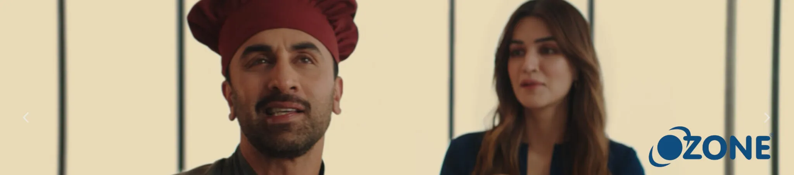
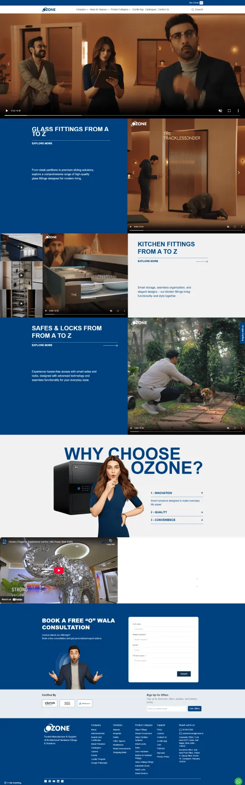
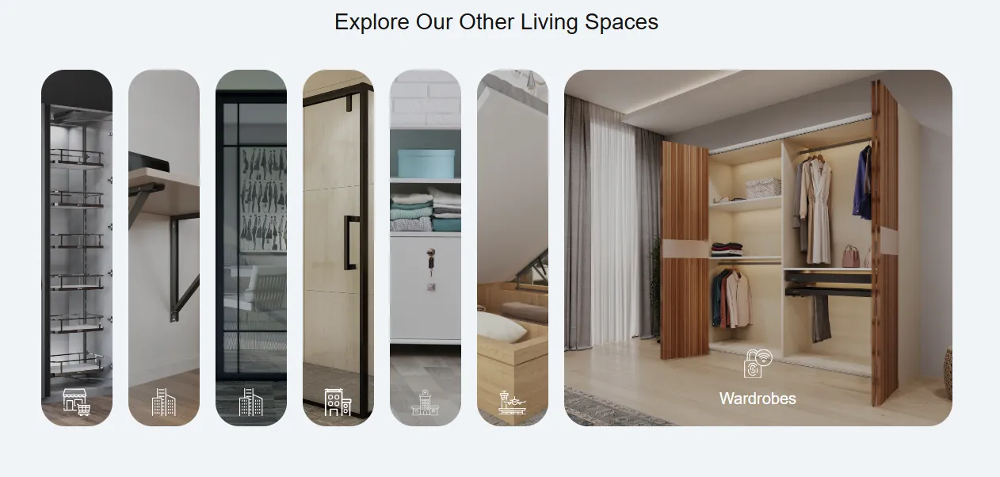

Complete Project Planning & Quotation Platform, Ozone Website Development
Ozone is a global distributor of architectural hardware and high-end security solutions. They needed a fast redesign & redevelopment of their website as well as development of a tool to be utilized by Architects at the time of launching a big TV ad campaign. The organization deals in an assortment of products serving commercial, residential, and institutional projects.
As an advocate of having more architects, sales staff, and channel partners around the world, Ozone wished to digitize and automate how their teams quote, specify, and plan extensive architectural jobs.
The traditional process of using emails, spreadsheets, and numerous manual steps was lengthy, time-consuming, error-ridden and non-standardized. To counter these issues, Cloud Converge built a centralized digital platform through which Ozone’s sales and design teams could cooperatively add and produce proposals rapidly and accurately.

Business Challenges
Disjointed pre-sales process that isolates sales from product and architects.- Manual BOM and quotes, which are error-prone
- Unorganized proposal documentation and varying pricing
- Outdated corporate site with disjointed user experience
- Requirement for a scalable, contemporary platform to support brand marketing initiatives
- Solutions Provided
Project Planning & Quotation Platform:
We designed and built an internal web-based application for sales reps and architects to utilize that will make every aspect of a project life cycle, from design to cost estimating, possible.
The system allows users to upload and store all project documents and architectural plans in a single location. Both teams have the capacity to design a detailed building plan and the project’s infrastructure needs. Users can also specify various types of doors and hardware (e.g., hinges, locks, access control, etc.). Ozone software is completely integrated with Ozone’s live product catalogue, giving the user the capability to browse products and choose all the fittings and fixtures of the project in real-time.
The system creates an accurate Bill of Materials (BOM) for project configurations and automatically generates commercial quotes upon proposing to customers. Role-based access, approval workflows, and versioning make the collaboration process secure and auditable but grant users visibility and accountability among stakeholders.
Design Phase
In tandem with the mobile app, we also created and built Ozone’s corporate website in coordination with a scheduled nationwide television advertising campaign.
The aim was to create a contemporary and high-performance digital presence that reflected Ozone’s design-oriented presence while enhancing user experience and scalability.
Ozone’s marketing division is now based at a brand-new website with a clean and responsive design for desktop and phone friendly easy navigation via service and category picks. We made sure that performance boosts were achieved, and we adopted SEO best practices to improve the site’s visibility and search engine rankings.
In addition, a single content management system (CMS) was installed to facilitate a feature for real time updates and management of marketing team’s content, and the counting (and counting) site was designed so that any bursts of traffic resulting from a campaign wouldn’t bring the site crashing down.
In the course of a TV campaign, the site was an important digital contact point, building brand awareness and user interest and leading to leads from marketing campaigns with proper qualifying criteria.
Conclusion
The Ozone project is an end-to-end digital makeover – blending operational features with customer-facing enrichments. The project planning tool merged advanced workflows and enhanced internal productivity, while the website transformation maximized the Ozone brand during a high-impact media roll-out. Together, all these components helped Ozone establish their brand as product & technology leaders within the architecture hardware space.
